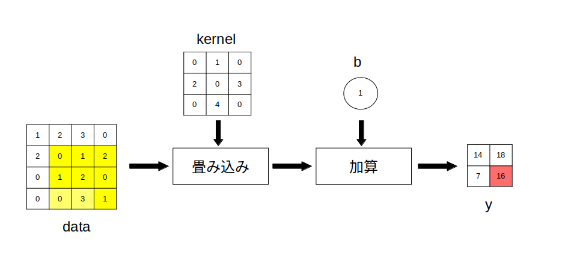

画像の畳み込み演算は、入力した画像内のある注目している画素の周辺情報をまとめて抽出(または除去)して新しい画像を作り出すという演算です。
畳み込み演算を行うためにはまず「カーネル(Kernel)」と呼ばれるフィルタ係数行列とバイアスを用意します。
なおカーネルの行数と列数は任意の整数で良いのですが、今回は話を簡単にするためにカーネルは以下で示される 3 x 3 の正方行列 kernel とします。
\[ {\rm kernel} = \begin{bmatrix} k_{00}, & k_{01} &, k_{02} \\ k_{10}, & k_{11} &, k_{12} \\ k_{20}, & k_{21} &, k_{22} \\ \end{bmatrix} \]
またバイアスは b とします。
このカーネルとバイアスの値を変えることによって様々な特徴を入力画像から抽出/除去することが出来ます。
例えば入力画像から高周波ノイズを取り除きたい場合は移動平均フィルタなどが使われますが、移動平均フィルタのカーネルは以下のように表されます(バイアスは b = 0)。
(移動平均フィルタのカーネル)
\[ {\rm kernel} = \begin{bmatrix} 1/9, & 1/9 &, 1/9 \\ 1/9, & 1/9 &, 1/9 \\ 1/9, & 1/9 &, 1/9 \\ \end{bmatrix} \]
また入力画像のエッジ抽出に使われる(8近傍)ラプラシアンフィルタのカーネルは以下のように表されます(バイアスは b = 0)。
(ラプラシアンフィルタのカーネル)
\[ {\rm kernel} = \begin{bmatrix} 1, & 1 &, 1 \\ 1, & -8 &, 1 \\ 1, & 1 &, 1 \\ \end{bmatrix} \]
次に入力画像を rows x cols 行列 data とします。
\[ {\rm data} = \begin{bmatrix} d_{00}\ , & \cdots &,\ d_{\rm 0(cols-1)} \\ \vdots & \ddots & \vdots \\ d_{\rm (rows-1)0}\ , & \cdots &,\ d_{\rm (rows-1)(cols-1)} \end{bmatrix} \]
また畳み込み演算を行った結果得られる出力画像を (rows-2) x (cols-2) 行列 y とします。
※ 行列の大きさが2減る理由は、少し下で定義している畳み込み演算の定義式のためです。
\[ {\rm y} = \begin{bmatrix} y_{00}\ , & \cdots &,\ y_{\rm 0(cols-3)} \\ \vdots & \ddots & \vdots \\ y_{\rm (rows-3)0}\ , & \cdots &,\ y_{\rm (rows-3)(cols-3)} \end{bmatrix} \]
すると畳み込み演算は以下の様に定義されます。
\[ y_{ij} = \sum_{k=0}^{2}\sum_{l=0}^{2} k_{kl} \cdot d_{(i+k)(j+l)} + b \\ (i=0,1,\cdots,{\rm rows}-3) \ ,\ (j=0,1,\cdots, {\rm cols}-3) \]
このように定義式だけ見せても良く分からないと思いますので具体例を示します。
まず入力画像を以下の 4x4 行列とします。
\[ {\rm data} = \begin{bmatrix} 1, & 2, & 3, & 0 \\ 2, & 0, & 1, & 2 \\ 0, & 1, & 2, & 0 \\ 0, & 0, & 3, & 1 \\ \end{bmatrix} \]
すると出力画像は 2x2 行列となります。
\[ y = \begin{bmatrix} y_{00}, & y_{01} \\ y_{10}, & y_{11} \\ \end{bmatrix} \]
またカーネルを以下の 3x3 行列とします(値は適当に決めています)。
\[ {\rm kernel} = \begin{bmatrix} 0, & 1 &, 0 \\ 2, & 0 &, 3 \\ 0, & 4 &, 0 \\ \end{bmatrix} \]
バイアスは次のようにします。
\[ b = 1 \]
この時、出力画像の左上座標の画素値 $y_{00}$は定義式より次の様に計算されます。
\begin{align*} y_{00} &= \sum_{k=0}^{2}\sum_{l=0}^{2} k_{kl} \cdot d_{kl} + b \\ \\ &= k_{00}\cdot d_{00} + k_{01}\cdot d_{01} + k_{02}\cdot d_{02} \\ &\ + k_{10}\cdot d_{10} + k_{11}\cdot d_{11} + k_{12}\cdot d_{12} \\ &\ + k_{20}\cdot d_{20} + k_{21}\cdot d_{21} + k_{22}\cdot d_{22} \\ &\ + b \\ \\ &= 0\cdot 1 + 1\cdot 2 + 0\cdot 3 \\ &\ + 2\cdot 2 + 0\cdot 0 + 3\cdot 1 \\ &\ + 0\cdot 0 + 4\cdot 1 + 0\cdot 2 \\ &\ + 1 \\ \\ &= 0 + 2 + 0 + 4 + 0 + 3 + 0 + 4 + 0 + 1 = 14 \end{align*}以上で行った演算を図で示すと以下の図1となります。
data の黄色の部分の画素に対して畳み込み演算を行い、$y_{00}$ (赤い部分)の画素値を求めている
同様に $y_{01}$ は以下の図2の様にして求めます。
data の黄色の部分の画素に対して畳み込み演算を行い、$y_{01}$ (赤い部分)の画素値を求めている
$y_{10}$ は図3の様にして求めます。
data の黄色の部分の画素に対して畳み込み演算を行い、$y_{10}$ (赤い部分)の画素値を求めている
$y_{11}$ は図4の様にして求めます。
data の黄色の部分の画素に対して畳み込み演算を行い、$y_{11}$ (赤い部分)の画素値を求めている
従って出力画像は最終的に次の様に求まります。
\[ y = \begin{bmatrix} 14, & 18 \\ 7, & 16 \\ \end{bmatrix} \]